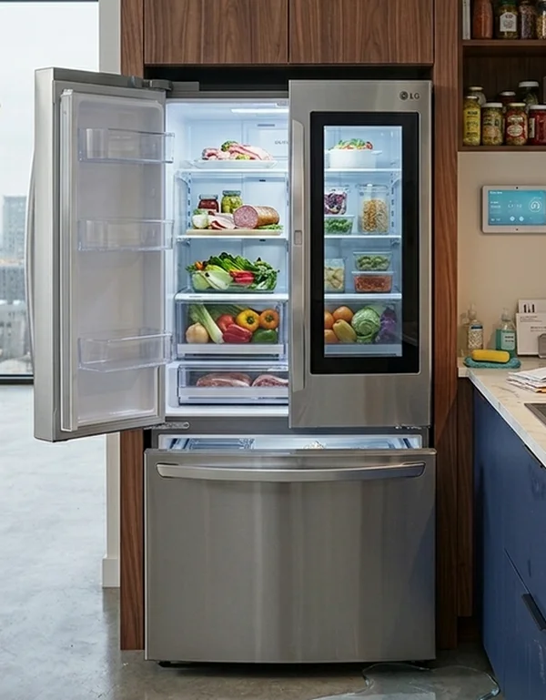

LG Refrigerator Shows Error Code on Display: Possible Temperature Sensors, Fan Failure, Defrost System Issue, or Electronic Control Board Malfunction
When an LG refrigerator displays an error code, it is signaling that one of its internal systems is not operating correctly. These codes are part of the built-in self-diagnosis system designed to detect faults early and prevent further damage. While the exact meaning of each code depends on the model, the underlying causes are usually related to temperature sensors, airflow problems, defrost system failures, or issues with the electronic control module.
One of the most common reasons for error codes is a faulty temperature sensor. LG refrigerators use multiple sensors to monitor conditions inside the refrigerator and freezer compartments. If one of these sensors starts sending incorrect readings or loses connection with the control board, the system detects abnormal temperature behavior and triggers an error. In some cases, cooling continues but becomes unstable; in others, the refrigerator may struggle to maintain the set temperature.
Another frequent source of errors is a malfunctioning evaporator fan. This fan is responsible for circulating cold air throughout the appliance. If the motor fails, the blades become blocked by ice, or electrical power is interrupted, airflow stops or becomes insufficient. The control system then detects uneven temperature distribution and generates an error code. This often results in one compartment being noticeably warmer than the other, even if the compressor is still running.

Problems within the defrost system can also trigger error messages. In LG refrigerators with No Frost technology, the evaporator is periodically defrosted using a heater, defrost sensor, and thermal fuse. If any of these components fail, ice begins to accumulate on the evaporator. This restricts airflow, reduces cooling efficiency, and causes the system to detect abnormal operating conditions. As a result, an error code may appear long before the cooling failure becomes obvious.
The electronic control module is another critical component that can cause error codes when it malfunctions. This board coordinates all refrigerator functions, including compressor operation, fan speed, defrost cycles, and temperature regulation. If it develops internal faults or communication errors, it may incorrectly interpret signals from sensors or fail to control components properly. In such cases, the refrigerator may appear to operate normally, but the error code remains active and cooling performance gradually declines.
In some situations, the error code is triggered by temporary external conditions rather than a hardware failure. For example, frequent door openings, overloading the compartments with warm food, or a recent power outage can temporarily disrupt normal temperature regulation. However, if the error persists after the refrigerator stabilizes, it usually indicates a real technical issue that requires inspection.
Certain LG models display specific error codes that point to particular components. While these codes help narrow down the problem area, they do not always provide a complete diagnosis.
For example, a sensor-related code may appear even when the actual issue is wiring damage or a control board communication failure. For this reason, interpreting error codes correctly requires testing of multiple system components. Typical signs accompanying error codes include inconsistent cooling, unusual fan noise, continuous compressor operation, frost buildup inside the freezer, or failure to maintain the set temperature. In some cases, the display may flash along with the error code, indicating that the system is actively trying to compensate for a detected fault.
Diagnosing the exact cause requires proper technical evaluation. Temperature sensors must be tested for correct resistance values, fans must be checked for mechanical and electrical operation, and the defrost system must be inspected for continuity and proper activation. The control board also needs to be evaluated for signal output and communication stability with connected components.
Attempting to reset or ignore the error code without addressing the underlying issue may temporarily clear the display but does not resolve the fault. In many cases, the error returns after a short period of operation, often with worsening symptoms. This can lead to more serious failures if the refrigerator continues running under abnormal conditions.
Preventive maintenance can help reduce the likelihood of error codes. Keeping air vents clear, ensuring proper door sealing, avoiding excessive frost buildup, and maintaining stable power supply conditions all contribute to normal system operation. Regular cleaning of condenser coils and inspection of airflow paths also improves overall reliability.
If your LG refrigerator displays an error code, professional diagnosis is recommended. A technician can accurately identify whether the issue originates from a temperature sensor, evaporator fan, defrost system, or electronic control module. Proper repair restores normal operation, prevents further damage, and ensures stable cooling performance across all compartments.